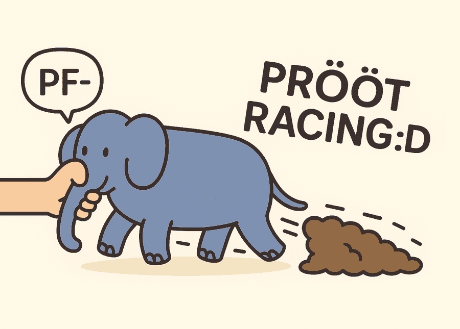

PRÖÖT Laptimer
Pomiar czasów okrążeń z RaceBoxa na LilyGo T-Display-S3 — instrukcja obsługi i wgrywanie firmware.
Ta przeglądarka nie obsługuje Web Serial. Użyj Chrome lub Edge na komputerze (Firefox i Safari tego nie mają, mobilne też nie).
Wgrywanie wymaga połączenia po HTTPS.
Wersja: sprawdzam…
Ten sam napis zobaczysz po wgraniu na dole dashboardu jako SW — ze skrótem regionu na końcu.
Który region wybrać
Cała baza torów świata nie zmieściłaby się w pamięci płytki, więc firmware jest wydany w sześciu wariantach — każdy zawiera tory jednego regionu. Wybierz ten, w którym jeździsz; jeśli jeździsz w Europie, zostaw Europę (wariant domyślny).
- Tory z innych regionów nie będą rozpoznane. Gdy w promieniu 20 km od Twojej pozycji nie ma żadnego toru z wgranej listy, urządzenie nie ustawia linii startu/mety: pole toru na dashboardzie zostaje puste, a pomiar okrążeń nie startuje. Delta i czasy też nie — nie ma od czego liczyć.
- Turcja, Rosja, Ukraina, Cypr, Gruzja siedzą w Europie, a Bliski Wschód (ZEA, Katar, Bahrajn, Arabia Saudyjska…) w Azji. Meksyk, Ameryka Środkowa i Karaiby — w Ameryce Północnej.
- Po wgraniu widać, co siedzi na płytce: numer softu na dole dashboardu
kończy się skrótem regionu —
EU,NA,SA,AS,AF,OC. - Zmiana regionu to zwykłe wgranie z tej strony: wybierz inny region i kliknij przycisk. Obraz zawiera bootloader i tablicę partycji, więc wgranie jest pełne i kasujące — zapamiętanego RaceBoxa trzeba potem wybrać od nowa.
Lista torów bierze się z bazy RaceBoxa, po jednym wpisie na konfigurację toru (osobne linie
startu/mety wariantów są rozpoznawane niezależnie, np. Deauville i
Deauville small).
Nie masz jeszcze urządzenia?
Ta strona wgrywa firmware na gotową płytkę. Jeśli dopiero chcesz sobie taki laptimer złożyć — zobacz co kupić i jak to poskładać: wersja podstawowa (sama płytka, zasilanie z USB) i wersja z baterią, z linkami do części.
Zanim klikniesz
- Kabel musi przesyłać dane. Kabel „tylko do ładowania” nie pokaże żadnego portu.
- Podłącz płytkę do USB i kliknij przycisk — w oknie wyboru portu wskaż urządzenie
303A:1001. - Jeśli portu nie widać albo połączenie zrywa się w kółko, wejdź w tryb bootloadera ręcznie: przytrzymaj BOOT, krótko naciśnij RESET, puść BOOT — i spróbuj ponownie. Płytka ma natywne USB, więc automatyczny reset z przeglądarki bywa zawodny.
- Po zakończeniu naciśnij RESET, żeby uruchomić nowy firmware.
Jak to działa
Urządzenie nie ma własnego GPS. Łączy się po Bluetooth z RaceBoxem (Mini / Mini S / Micro) i na bieżąco czyta z niego pozycję 25 razy na sekundę. Z tych punktów sam liczy przejazdy przez linię startu/mety, czasy okrążeń i żywą deltę — o ile jesteś szybszy lub wolniejszy niż na swoim najlepszym okrążeniu, w tym samym miejscu toru.
RaceBox robi swoje niezależnie: przyciskiem na płytce możesz włączyć jego wewnętrzne nagrywanie (standalone recording), żeby zapis sesji został w pamięci RaceBoxa do późniejszej analizy w aplikacji.
Tory są wpisane w firmware — w wariancie regionalnym (który wybrać). Urządzenie samo bierze najbliższy tor z listy i ustawia jego linię startu/mety; dopóki nie przejedziesz przez metę, wybór może się jeszcze przestawić na bliższy tor, potem jest już zablokowany. Jeśli żaden tor z wgranej listy nie jest bliżej niż 20 km, linia nie zostaje ustawiona i pomiar nie rusza.
Pierwsze uruchomienie
- Włącz RaceBoxa i połóż go tak, żeby „widział” niebo (dach, deska rozdzielcza). Nie może być połączony z telefonem — jednocześnie gada tylko z jednym urządzeniem.
-
Włącz płytkę — podłącz USB / powerbank albo, jeśli jest uśpiona, naciśnij
dolny przycisk. Na ekranie pojawi się słoń i napis
Szukam RaceBox.... - Wybierz RaceBoxa z listy. dolny = w dół, górny = w górę, zaznaczenie jest żółte. Przytrzymaj górny przez 2 s, żeby zatwierdzić.
-
Poczekaj na fix. Po połączeniu wchodzi dashboard. Na zimnym starcie RaceBox
potrzebuje kilkudziesięciu sekund; do tego czasu
Fix braki zerowe współrzędne (to normalne, w garażu fixa nie będzie w ogóle). - Jedź. Pomiar rusza sam przy pierwszym przecięciu linii startu/mety. Tor zostaje wybrany automatycznie przy pierwszym fixie.
Wybrany RaceBox jest zapamiętywany. Przy kolejnym starcie urządzenie pomija listę
i od razu pokazuje Laczenie.... Żeby o nim zapomnieć i wrócić do listy —
trzymaj dolny przycisk w momencie włączania (ok. 1,5 s), aż mignie Reset RaceBox.
Przyciski
Płytka ma dwa przyciski po bokach gniazda USB. dolny to ten przy USB (GPIO14), górny to BOOT. Ich znaczenie zależy od tego, czy jesteś na liście wyboru RaceBoxa, czy już połączony.
| Przycisk | Krótkie naciśnięcie | Przytrzymanie ~2 s |
|---|---|---|
| dolny GPIO14, przy USB |
Na liście: zaznaczenie w dół. Po połączeniu: włącz / wyłącz nagrywanie w RaceBoxie (pole REC).
|
Wyłączenie urządzenia — w obu trybach. |
| górny BOOT |
Na liście: zaznaczenie w górę. Po połączeniu: następny ekran (dashboard → delta → okrążenia → dashboard). |
Na liście: zatwierdź zaznaczony RaceBox. Po połączeniu: nic. |
| dolny przy włączaniu | Trzymany od momentu włączenia przez ~1,5 s kasuje zapamiętanego RaceBoxa
(na ekranie Reset RaceBox) i wraca do listy wyboru. |
|
| RESET | Restart firmware. Kasuje sesję: okrążenia, deltę i wybór toru (przydatne, gdy urządzenie trafiło w zły tor). | |
Ekrany
Przełączasz je krótkim naciśnięciem górny, w kółko.
1. Dashboard — wszystko naraz
- Góra: nazwa RaceBoxa i
REC— czerwoneON(nagrywa), pomarańczowaPAUZA, szareOFF. - Duży czas to trwające okrążenie, obok delta:
zielona = szybciej niż best, czerwona = wolniej,
--gdy nie ma jeszcze do czego porównać. Best/Last/L— najlepsze, ostatnie, licznik okrążeń.Fix 3Di liczba satelitów — zielone znaczy „można jechać”.- Na dole pozycja, wybrany tor (pomarańczowo — pusto, jeśli w promieniu
20 km nie ma toru z wgranego regionu), baterie i wersja softu ze
skrótem regionu (
EU,NA,SA,AS,AF,OC).
2. Delta — do patrzenia kątem oka
- Całe tło jest sygnałem: zielone = jedziesz szybciej niż na best lapie, czerwone = wolniej, szare = brak porównania.
- Wielka liczba to strata/zysk w sekundach w tym punkcie toru, pod nią czas bieżącego okrążenia.
- Przez 10 s po przecięciu mety dolny czas robi się żółty i pokazuje czas właśnie zakończonego okrążenia.
3. Lista okrążeń — po sesji
- Czasy posortowane od najszybszego, czytane kolumnami. Liczba z przodu to numer okrążenia.
- Zielony = najlepsze, czerwony = najwolniejsze z pokazanych.
- Mieści się 27 najszybszych okrążeń — wolniejsze wypadają z listy.
Nagrywanie w RaceBoxie (REC)
Krótkie naciśnięcie dolny po połączeniu przełącza wewnętrzny zapis RaceBoxa.
Dane lądują w jego pamięci, a nie na płytce — ściągniesz je potem aplikacją RaceBoxa.
Pomiar okrążeń na ekranie działa niezależnie od tego, czy REC jest włączony.
Stan PAUZA też liczy się jako „aktywne” — kolejne naciśnięcie wyłącza zapis.
Wyłączanie i zasilanie
- Wyłączenie: przytrzymaj dolny przez 2 s — pokaże się
Wylaczanie...i ekran gaśnie. To głębokie uśpienie (pobór rzędu µA), nie odcięcie zasilania. - Włączenie: naciśnij dolny. Urządzenie startuje od zera — okrążenia i wybór toru z poprzedniej sesji przepadają, zapamiętany RaceBox zostaje.
- Baterie na dashboardzie:
RBto RaceBox,DEVto płytka. Zielony powyżej 50%, pomarańczowy poniżej, czerwony poniżej 20%. - Na USB nie da się zmierzyć procentu ogniwa płytki — wtedy widać
DEV chrgalbo ostatnią znaną wartość z+.
Gdy coś nie gra
- Ekran stoi na
Szukam RaceBox... - RaceBox wyłączony albo już połączony z telefonem/aplikacją. Rozłącz go tam i poczekaj chwilę.
- Stoi na
Laczenie... - Zapamiętanego RaceBoxa nie ma w zasięgu. Włącz go — połączy się sam. Jeśli to nie ten RaceBox, skasuj zapamiętany (trzymaj dolny przy włączaniu).
Fix brak, współrzędne 0.000000- RaceBox nie ma jeszcze pozycji. Pod dachem nie złapie — wystaw go na otwarte niebo i daj minutę.
- Czas okrążenia nie startuje
- Pomiar rusza dopiero po przecięciu linii startu/mety wybranego toru. Sprawdź, czy nazwa toru na dashboardzie (pomarańczowa) jest właściwa.
- Pole toru jest puste
- Żaden tor z wgranej listy nie jest bliżej niż 20 km — najczęściej znaczy to zły region firmware'u (albo tor, którego nie ma w bazie RaceBoxa). Wgraj wariant właściwy dla swojego kontynentu; sprawdź skrót regionu na końcu numeru softu.
- Zły tor
- Dopóki nie przejedziesz przez metę, urządzenie samo przestawi się na bliższy tor. Po pierwszym przejeździe wybór jest zablokowany do restartu — wtedy naciśnij RESET już na miejscu, przy złapanym GPS-ie.
- Delta pokazuje
-- - Nie ma jeszcze najlepszego okrążenia. Delta pojawia się po przejechaniu pierwszego pełnego kółka.
- Czarny ekran po włączeniu
- Naciśnij RESET. Jeśli nie pomaga — sprawdź zasilanie i wgraj firmware ponownie.
Ten build
- Płytka
- LilyGo T-Display-S3 (ESP32-S3, 16 MB flash)
- Region
- Europa
- Obraz
- merged-firmware-europe.bin — pełny zrzut od offsetu 0x0
- Manifest
- manifest-europe.json
Obraz zawiera bootloader, tablicę partycji, otadata i aplikację, więc nadpisuje całą pamięć — standalone recording zapisany w RaceBoxie tego nie dotyczy, ale zapamiętany RaceBox i tak trzeba będzie wybrać od nowa.